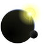
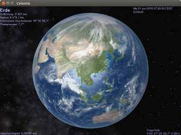

Celestia
Dieser Artikel wurde für die folgenden Ubuntu-Versionen getestet:
Ubuntu 14.04 Trusty Tahr
Zum Verständnis dieses Artikels sind folgende Seiten hilfreich:

Celestia  ist ein Programm, mit dem man sich virtuell durch das Weltall bewegen und andere Planeten, Sterne und Galaxien besuchen kann. Die Simulation hat eine sehr gute Grafik und kann mit Hilfe von Add-ons um Raumschiffe, Raumsonden und Planeten ergänzt werden. Zudem gibt es fertige Touren, die zusätzliche Einblicke ins Universum ermöglichen.
ist ein Programm, mit dem man sich virtuell durch das Weltall bewegen und andere Planeten, Sterne und Galaxien besuchen kann. Die Simulation hat eine sehr gute Grafik und kann mit Hilfe von Add-ons um Raumschiffe, Raumsonden und Planeten ergänzt werden. Zudem gibt es fertige Touren, die zusätzliche Einblicke ins Universum ermöglichen.
Installation¶
Das Programm befindet sich in den offiziellen Paketquellen, es muss lediglich das folgende Paket installiert werden [1]:
celestia (universe)
 mit apturl
mit apturl
Paketliste zum Kopieren:
sudo apt-get install celestia
sudo aptitude install celestia
Nutzt man dagegen die Desktop-Umgebungen GNOME bzw. Xfce, so sollte folgendes Paket installiert werden:
celestia-gnome (universe)
mit apturl
Paketliste zum Kopieren:
sudo apt-get install celestia-gnome
sudo aptitude install celestia-gnome
Zusätzlich können mit celestia-common-nonfree weitere Texturen installiert werden.
Experten-Info:
Die oben genannten Pakete sind lediglich Metapakete für die jeweilige Desktop-Umgebung. Bei der Installation der Metapakete sollte das eigentliche Programm, das im Paket celestia-common (universe) steckt, automatisch mit installiert werden. Alternativ kann man das Paket celestia (und evtl. das GNOME-Frontend) installieren.
Danach kann celestia gestartet werden [2]. Programmstarter finden sich bei Ubuntu-Varianten mit einem Anwendungsmenü unter:
Installation mit Wine¶
 Von Celestia kann man auch die Version für Windows mit Wine installieren [3]. Daraus ergeben sich einige Vorteile:
Es gibt eine vollständige deutsche Bedienoberfläche
Man kann sehr einfach auf eine neuere Version umsteigen (Neuinstallation)
Um Celestia mit Wine zu installieren, lädt man sich die Windowsversion  herunter. Ein separates Sprachpaket ist nicht erforderlich. Ist das Setup abgeschlossen, kann man Celestia über "Anwendungen -> Wine -> Programme -> Celestia -> Celestia" starten.
herunter. Ein separates Sprachpaket ist nicht erforderlich. Ist das Setup abgeschlossen, kann man Celestia über "Anwendungen -> Wine -> Programme -> Celestia -> Celestia" starten.
Add-Ons hinzufügen¶
Celestia verfügt schon standardmäßig über eine große Auswahl an Objekten, die man sich anschauen kann. Wer sich jedoch z.B. ein Space Shuttle oder etwa die einzelnen Ausbaustufen der ISS angucken möchte, muss diese mit Hilfe von Add-Ons hinzufügen. Auf celestiamotherlode.net kann man sich solche Add-Ons herunterladen. Diese liegen im Zip-Archiv vor, das zunächst entpackt werden muss [4]. Dann wird der entpackte Ordner mit Root-Rechten [5] in den Ordner /usr/share/celestia/extras/ verschoben. Nach dem Verschieben lässt sich das Objekt in Celestia anzeigen. Dazu öffnet man das Menü "Navigation" und klickt dann auf "Go To Object". Dann gibt man den Namen des Add-Ons ein, z.B. "Stonehenge". Man bestätigt mit dem Druck auf
⏎ und anschließend auf
G . Dann beginnt die Reise.
Hinweis:
Wenn man Celestia mit Wine installiert hat, entpackt man das Archiv [4] in den Order ~/.wine/drive_c/Programme/Celestia/extras. Root-Rechte sind hierzu nicht erforderlich. Anschließend kann man das Objekt über "Navigation -> Objekt auswählen " (Name eintippen, mit ⏎ bestätigen und dann Taste G drücken) anzeigen lassen.
Hinweis:
Man sollte auch darauf achten, dass die Add-Ons eine .3ds-Datei enthalten, denn nur wenn eine solche Datei vorhanden ist, wird das Add-On funktionieren. Weitere Informationen sollte man einer Textdatei entnehmen, die im Zip-Archiv beiliegt.
Bedienung¶
Celestia wird mit der Maus und mit der Tastatur gleichzeitig gesteuert.
| Steuerung | |
| Maustaste | Bedeutung |
 | Objekt anwählen |
| (ziehen) | Verändern der Ansicht |
| (Doppelklick) | Objekt wird angewählt und zentriert |
| +
Strg (ziehen) | Entfernung um Objekt ändern |
| +
⇧ (ziehen) | Hinein- bzw. herauszoomen |
 | Kontextmenü aufrufen |
| (ziehen) | gewähltes Objekt umrunden |
| + (ziehen) | Entfernung um Objekt ändern |
 (drehen) (drehen) | Hinein bzw. herauszoomen |
| (klicken) | Umschalten zwischen vorheriger und aktueller Ansicht |
| Taste auf der Tastatur | Bedeutung |
| H | Gehe zur Sonne |
| C | Objekt wird zentriert |
| G | Gehe zum angewählten Objekt |
| F | Dem Objekt folgen |
| ⇧ + . | An ein Objekt anbinden (man bewegt sich mit dem Objekt) |
| ⇧ + 2 | Objekt verfolgen |
| Pos1 | Hereinzoomen |
| Ende | Herauszoomen |
| Zeit anhalten | |
| L | Zeitablauf 10X schneller |
| K | Zeitablauf 10X langsamer |
| J | Zeit läuft rückwärts |
| ⇧ + 7 | Zeit läuft rückwärts |
| F1 | Raumflug stoppen |
| F2 | Geschwindigkeit auf 1 km/s einstellen |
| F3 | Geschwindigkeit auf 1000 km/s einstellen |
| F4 | Geschwindigkeit auf Lichtgeschwindigkeit einstellen |
| F5 | Geschwindigkeit auf 10fache Lichtgeschwindigkeit einstellen |
| F6 | Geschwindigkeit auf 1 AE/s einstellen |
| F7 | Geschwindigkeit auf 1 Lichtjahr/s einstellen |
| A | Raumschiff beschleunigen |
| Z | Raumschiff abbremsen |
| 4 | Nach Links lenken |
| 6 | Nach Rechts lenken |
Pfeiltasten¶
Mit den Pfeiltasten kann man die Kamerapositionen ändern. Wenn man zusätzlich die ⇧ -Taste drückt, kann man das Objekt umrunden.
Zahlenreihe¶
Mit der Zahlenreihe oberhalb der Buchstaben auf der Tastatur können die Planeten direkt angewählt werden, wobei 1 für den Merkur, 2 für die Venus usw. bis 9 für den Pluto steht. Anschließend muss noch die G - Taste gedrückt werden, um zum Planeten zu fliegen.
Touren¶
Es ist in Celestia auch möglich, mit Hilfe von vorgefertigten Touren durch das Sonnensystem zu reisen. Diese Touren laufen automatisch ab und am unteren Bildrand erscheint ein Informationstext. Die Touren sind so programmiert, dass sie den Benutzer automatisch zum Ziel führen und die Zeit einstellen. Auf dieser Seite  kann man sich solche Touren, z.B. durch das Sonnensystem oder von einzelnen Planeten herunterladen. Man lädt sich ein Zip-Archiv herunter, das zunächst entpackt [4] werden muss. Dies sollte man natürlich im Homeverzeichnis tun. Die Tour als solche liegt in einer .cel- oder .celx- Datei vor, die mit Celestia geöffnet werden muss. In einer Textdatei liegen noch zusätzliche Hinweise bei.
kann man sich solche Touren, z.B. durch das Sonnensystem oder von einzelnen Planeten herunterladen. Man lädt sich ein Zip-Archiv herunter, das zunächst entpackt [4] werden muss. Dies sollte man natürlich im Homeverzeichnis tun. Die Tour als solche liegt in einer .cel- oder .celx- Datei vor, die mit Celestia geöffnet werden muss. In einer Textdatei liegen noch zusätzliche Hinweise bei.
Infobox¶
| Celestia | |
| Originaltitel: | Celestia |
| Genre: | 3D Echtzeit-Weltraumsimulation |
| Sprache: | Englisch (nativ); Deutsch (Wine) |
| Veröffentlichung: | 2001 - 2009 |
| Medien: | Download |
| Systemvoraussetzungen: | mindestens einen Prozessor mit 800MHz, 128MB Arbeitsspeicher und eine 3D-Grafikkarte mit 64 MB Grafikspeicher. |
| Läuft mit: | nativ, Wine |
- Erstellt mit Inyoka
-
 2004 – 2017 ubuntuusers.de • Einige Rechte vorbehalten
2004 – 2017 ubuntuusers.de • Einige Rechte vorbehalten
Lizenz • Kontakt • Datenschutz • Impressum • Serverstatus -
Serverhousing gespendet von